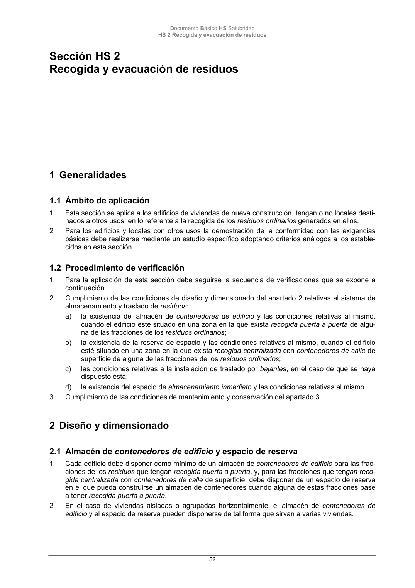

DB-HS · Fragmento de PDF p52 · versión 2022-06-14 · capa oficial
Formatos: JSON compacto · Markdown · PDF fuente
Ámbito del documento · texto del ámbito · documento y tablas
ID técnico a0124 · PDF pág. 52-53 · jerarquía no validada por persona · no es capítulo: sin_linea_de_encabezado · padre: raíz · literal original en el contenido: «2 Diseño y dimensionado 2.1 Almacén de contenedores de edificio y espacio de reserva»
2 Diseño y dimensionado 2.1 Almacén de contenedores de edificio y espacio de reserva 2.1 Almacén de contenedores de edificio y espacio de reserva 1 Cada edificio debe disponer como mínimo de un almacén de contenedores de edificio para las frac- ciones de los residuos que tengan recogida puerta a puerta, y, para las fracciones que tengan reco- gida centralizada con contenedores de calle de superficie, debe disponer de un espacio de reserva en el que pueda construirse unalmacén de contenedorescuando alguna de estas fracciones pase a tener recogida puerta a puerta. 2 En el caso de viviendas aisladas o agrupadas horizontalmente, el almacén de contenedores de edificio y el espacio de reserva pueden disponerse de tal forma que sirvan a varias viviendas. Documento Básico HS Salubridad HS 2 Recogida y evacuación de residuos 53

PDF fuente redistribuible: copia fiel enlazada en esta página (SHA256 verificado).